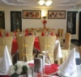
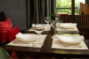

Lagos Restaurants and Eateries
|
Restaurants
Bernadines Cloud Kitchen are trustworthy restaurant in Nigeria, serving a delicious delicacy like Chinese pasta.  10b Rock Drive off Bisola Durositimi Etti, Filmhouse Cinemas, IMAX, Lekki Phase 1, Lagos 10b Rock Drive off Bisola Durositimi Etti, Filmhouse Cinemas, IMAX, Lekki Phase 1, Lagos 0812 585 3082, 0813 777 0041 0812 585 3082, 0813 777 0041TashX Lagos is a modern restaurant in Lekki offering delicious, high-quality meals in a warm and inviting atmosphere. Perfect for dates, hangouts, and family dining, TashX Lagos combines great food, cozy ambiance, and exceptional service. Abibiz Restaurant is located in Ikeja, Lagos. Afi's Restaurant is located in Surulere, Lagos. Aldente is a Italian restaurant located in Onikan, Lagos. All Seasons Restaurants is located in Victoria Island, Lagos. Anis Restaurant is located in Lagos Island, Lagos. Appetizers Restaurant is located in Ikeja, Lagos. Atlantic Bar & Restaurant is located in Victoria Island, Lagos. Ayus Restaurant And Bar is located in Victoria Island, Lagos. Plot 244A, Muri Okunntola Street, Victoria Island, Lagos, Nigeria0803 307 7666, 0706 217 3888Bangkok Restaurant is located in Victoria Island, Lagos.
12Barcelos
Barcelos is located in Ikeja, Lagos. Burgy's Fast Food & Restaurant is located in Ikoyi, Lagos. Cal's Place Restaurant is located in Ikeja, Lagos. Cera-Una-Volta Restaurant is located in Victoria Island, Lagos. 12/16, Tiamiyu Olushile Street, Mende, Maryland, Lagos, Nigeria0802 341 2769, 0802 562 0712Chadon Kitchen is located in Maryland, Lagos. Napex Centre, 3 Walter Carrington Crescent, Victoria Island, Lagos, Nigeria0803 322 6955, 0803 322 9701Chardonnay Restaurant & Bar is located in Victoria Island, Lagos. Cheesy Restaurant & Snacks Bar is located in Ikeja, Lagos. Chicken Cooking Family Restaurant provides services on food and drinks in Lagos. Chief Delight Restaurant is located in Apapa, Lagos. China Restaurant And Bar is located in Oshodi Isolo, Lagos. China Town Express Restaurant is located in Lagos Island, Lagos.  9B, Abagbon Close, Off Ologun Agbaje Street, Victoria Island, Lagos, Nigeria0802 314 1561, 0802 314 1560 01 270 4917 01 270 4917Chinaville Chinese Restaurant is located in Victoria Island, Lagos. Chopsticks Restaurant is located in Ikeja, Lagos. Chow Mein Chinese Restaurant is located in Lekki Phase 1, Lagos. 2 Abibu Adetoro Street, Off Ajose Adeogun Street, Victoria Island, Lagos Nigeria0807 521 5266, 0806 801 4593, 0706 612 32100704 653 7925Coors Restaurant and Lounge is a wonderful fast food joint located on the Island serving all African foods, drinks and seafood.  3, Ashabi Adedire Street, Opposite Apapa Boat Club, Apapa Lagos, Lagos0808 532 1147, 0813 910 5423Creek House Brasserie is a silver service restaurant that specializes in fine modern African and continental cuisines.We offer bespoke service, fine food, excellent wine, amazing interiors and a beautiful relaxing atmosphere. Cuisine Africana Restaurant is located in Surulere, Lagos. Darling - Ro Restaurant is located in Lagos Island, Lagos. Del Pizza Restaurant and Take Away is located in Lafiaji, Lagos. Demmies Delight is located in Mushin, Lagos. Double Four Restaurant & Eatery is located in Victoria Island, Lagos. Eat It All is located in Surulere, Lagos. Edikang Restaurant is located in Isolo, Lagos. 12A Opebi Road, Ikeja, Lagos Nigeria0909 868 9016, 0708 144 9307, 0803 332 126901-212 3063Emperor's Hotels & Restaurant Limited is located in Ikeja, Lagos. |
 |